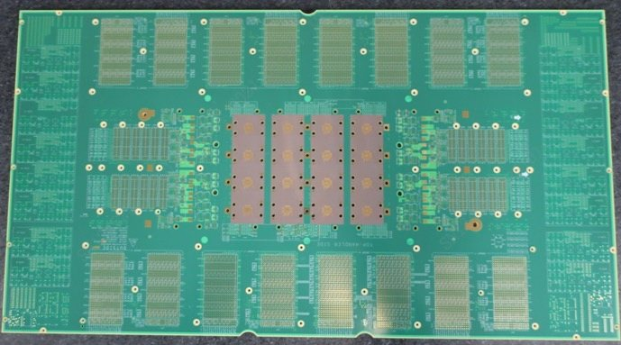
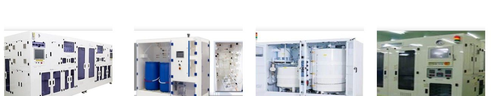
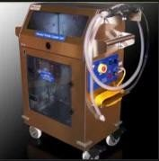

測試硬體
測試與可靠性硬體。
負載板・燒機板・EM 插座 DUT・訂製設備。
測試
測試・可靠性硬體
測試板・DUT


- 用於 HTOL／HAST 可靠性測試的燒機板（存儲・邏輯）
- 負載板・探針卡
- 按客戶圖紙和規格製作 EM 插座 DUT（技術合作夥伴）
訂製設備


- 研磨頭測漏儀適用於 AMAT 與 EBARA 研磨頭的正壓・負壓洩漏檢測
- 漿料・藥液供給系統（SDS／CDS）機台端（Local）與中央集中式供液系統，均可訂製
- 小型訂製設備粒子計數器推車・PPE 潔淨推車・晶圓傳送裝置